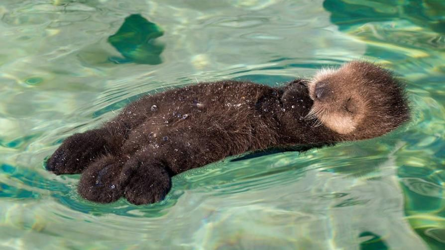

¿QUÉ ES UNA NUTRIA?

La nutria es un mamífero semiacuático de la familia Mustelidae, conocida por su cuerpo alargado, patas cortas y cola musculosa. Habita en ríos, lagos y costas marinas, y se caracteriza por su increíble habilidad para nadar y bucear en busca de alimento.